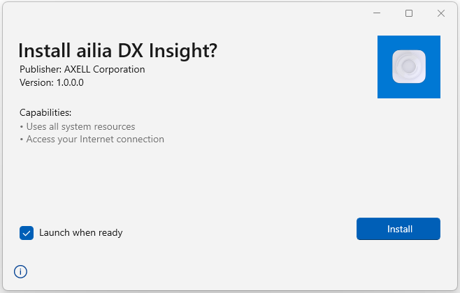
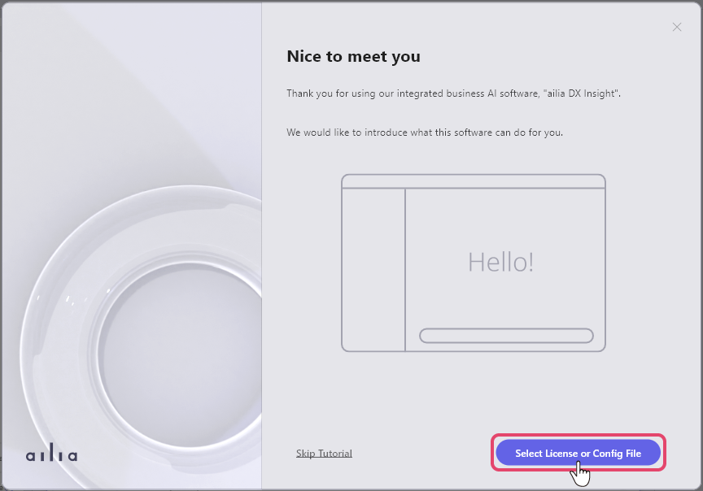
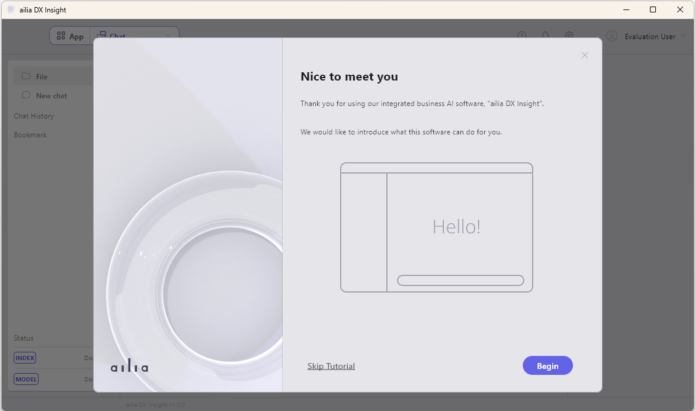
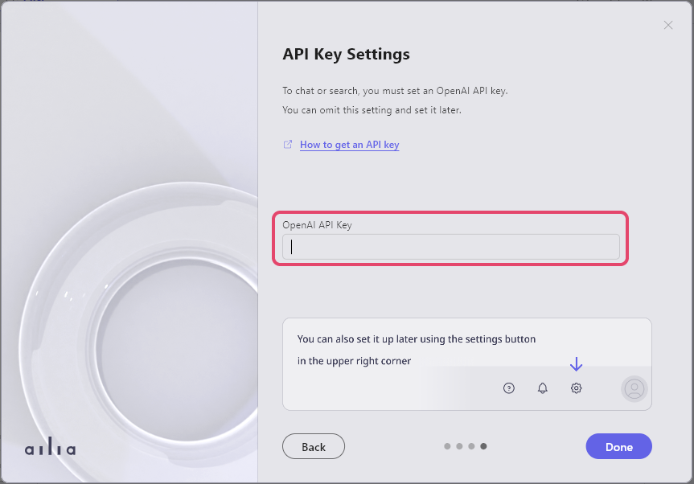
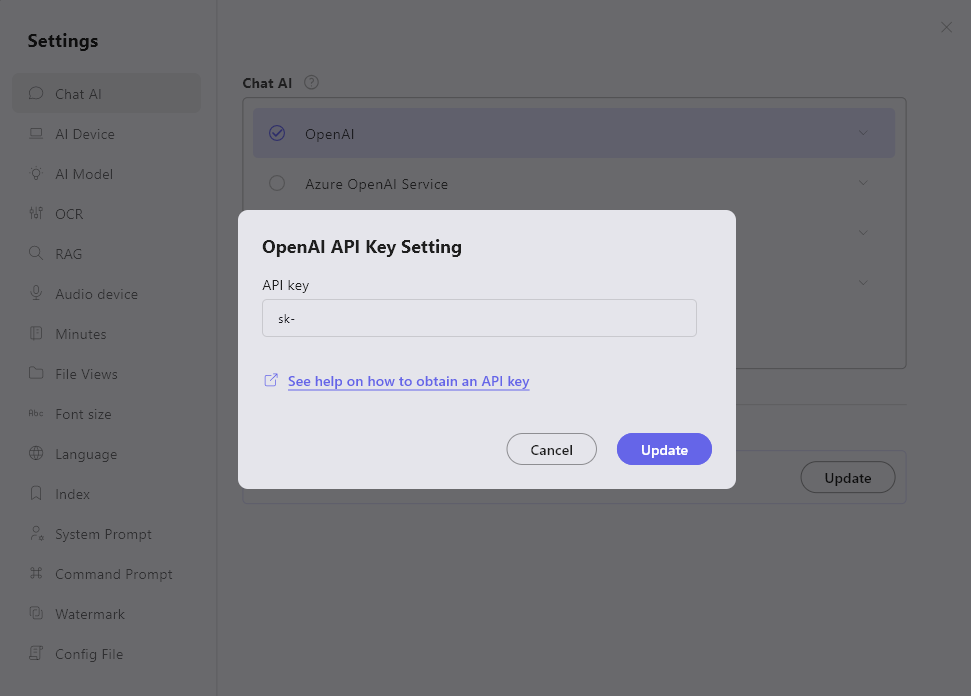
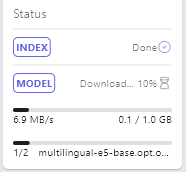

Setup
Download
Download ailia DX Insight and unzip the zip file.
Start Installer
For Windows, open ailia_dx_insight.msix and install "aillia_dx_insight.msix".
For macOS, open "ailia_dx_insight.dmg" and install ailia_dx_insight.app into the Application folder.

Select License or Config File
When you start the program for the first time, a window will appear saying "Please select a license or configuration file." Select the license file from the folder.
The license file required for startup will be stored in [HOME]/Library/SHALO for macOS, and [ROOT]/ProgramData/SHALO for windows. By selecting a config file, you can customize the application.

By selecting a config file, you can customize the application.
Acquiring OpenAI API Key
Register an account on the OpenAI WEB page and obtain the OpenAI API key. Even without inputting the OpenAI API key, you can use ailia DX Insight, but with limited functionality.
Setup
After selecting the license or config file, the tutorial screen will be displayed.

You can set the OpenAI API key on the final screen of the tutorial.
Setting OpenAI API Key
If setting from the tutorial
- Proceed to "Setting API Key" at the end of the tutorial.
- Enter the OpenAI API key starting with "sk-" into the text box below "OpenAI API Key".
 - Press the "Done" button.
If setting from the normal screen
- Press the gear icon in the top right corner of the screen.

- Enter the OpenAI API key starting with "sk-" into the text box in the displayed dialog.
 - Click "OpenAI", select the version of chatGPT to use, and press the "Close" button.
Downloading AI Models
After completing the tutorial on the first run, the AI model download will start. You can check the progress at the lower part of the left sidebar.

Once the download is complete, ailia DX Insight will be available for use.